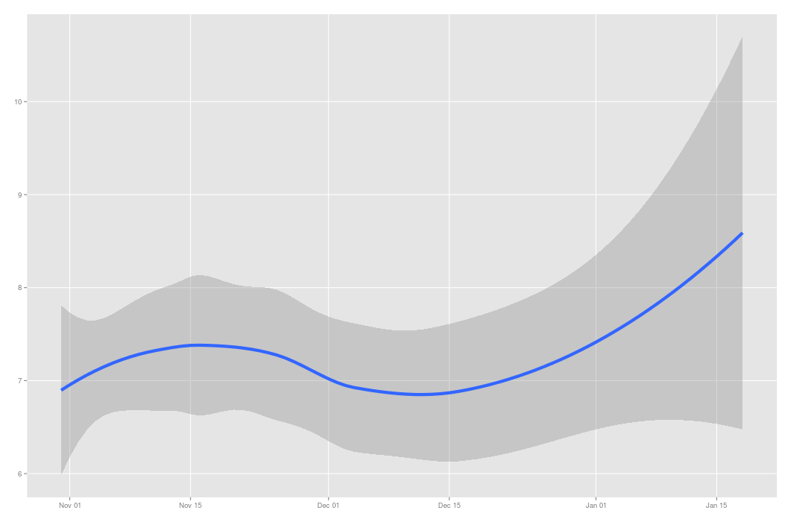

Your browser doesn't support the features required by impress.js, so you are presented with a simplified version of this presentation.
For the best experience please use the latest Chrome, Safari or Firefox browser.
What can you learn from tracking your own happiness?
Vik Paruchuri
Before we start
- Follow along at vikparuchuri.github.io/qs-ignite
The most important question
- I was working really long hours.
- Realized that I was unhappy
- Why am I unhappy, and how can it get better?
How do we do that?
- Wanted to measure happiness and mood.
- Track passive data to find correlations.
- Make entries when I want (no fixed time)
What can we use?
- Evaluated lots of measurement tools.
- Some too trivial (measure happiness with a smiley face)
- Others too complex (ask 1000 questions)
Create my own tool
- Called happsee(www.happsee.com)
- Works on android
- Maximize information gathered
- Minimize data entry
- Show periodic reminders
Have been tracking happiness since October 2013

And here is a happiness map
Insert map here
And moods over time...
Insert mood graph here
Recently, I added the ability to track a lot of passive factors
Like call and text frequency
Insert call # graph
Activity
Insert activity # graph
And periodic location
Insert map
What does this tell me?
People matter, a lot
Insert word cloud of word frequency vs happiness
Being tired matters more than I thought it does
Graph of tiredness vs energy as correlated to happiness
Recovery from bad circumstances is faster than I thought
Graph of time elapsed since unhappy mood vs happy mood
Mood tracking is more powerful when its not mandatory
Graph of engagement with tool over time
Being in new circumstances makes me happy
Graph of location vs happiness
What am I thinking for the future?
- Use machine learning to predict happiness
- Apply my own experience from the past to the future
More future capabilities
- Allow for experience sharing and shared understanding
- Connect to the really important people around me
- Pull in data from other sources
Want to try it?
- In beta for android right now.
- Check out happsee.com for more information.
- Contact me at vik@equirio.com
Thanks for listening!